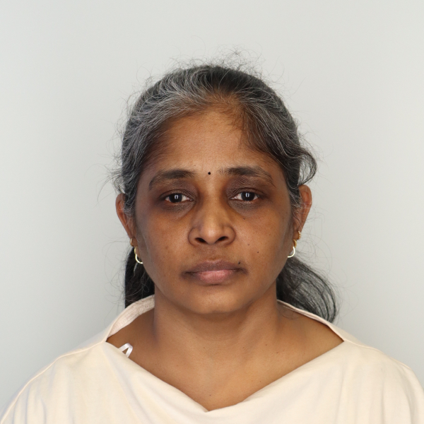

I am Anitha PhD, an education professional completing my Ed.M. at Harvard GSE. I design evidence-based learning experiences, lead educational programs, and build tools and strategies that improve teaching, learning, and STEM education.

I am an education professional completing my Ed.M. in Learning Design, Innovation & Technology at Harvard Graduate School of Education. My work focuses on instructional design, AI in education, program evaluation, and equitable learning experiences for underserved students.
Before Harvard, I worked across government education systems, higher education, and nonprofits in India, including leading large-scale training initiatives, designing learning experiences, and supporting teaching, learning, and educational improvement through research-informed practice. I bring a combination of research training, technical fluency, and program leadership.
Selected projects in learning design, AI-supported education, research, and education strategy.
Founder-led and mission-driven initiatives focused on STEM education, educational equity, and systems-level impact.
Core competencies developed across instructional design, research, strategy, project leadership, and educational program development.
Open to roles at the intersection of STEM learning, strategy, research, and educational impact. Available from June 2026.